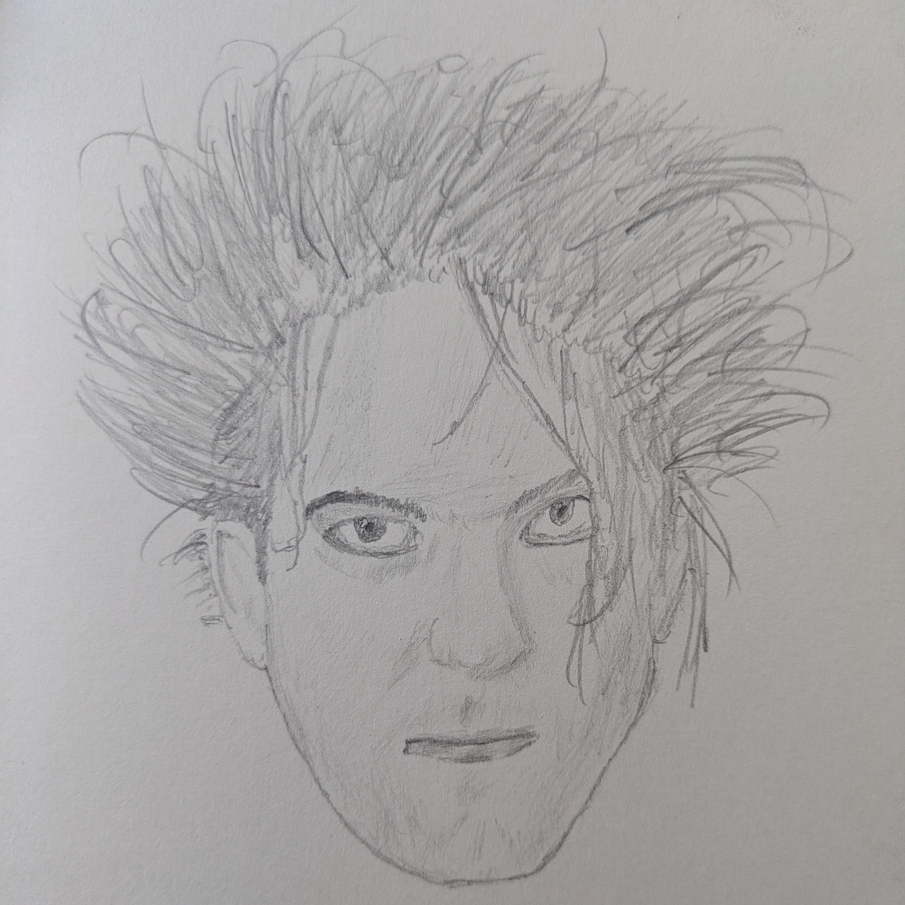

One Album for each Year of my Life
I saw a bloke I follow on Mastodon, Jake, do this and decided it was far too good an idea to leave unstolen. In fairness, he also nicked the idea off someone else.
This took me a while to put together. I primarily listen to music that came out before I was born, so I had to really go digging through some online lists and listen to a lot of new-to-me music to fill this thing out. That was a really pleasant experience, actually.
I’m reasonably pleased with this selection. There’s a mix of genres from pop to goth rock to metal, a bit of punk and a little electronic stuff. A rap album snuck in there, even. I’m really curious about other people’s album-year-list thing, so if you’ve done one of these (or you have a blog and some time to burn), let me know by sending me an email or a message on Mastodon and I’ll take a look.
Alright, that’s enough from me. Here’s an album for each year I’ve been alive:
- 1991: Ceremonies, The Cult
- 1992: Wish, The Cure
- 1993: Siamese Dream, The Smashing Pumpkins
- 1994: Live Through This, Hole
- 1995: Different Class, Pulp
- 1996: Milk And Kisses, Cocteau Twins
- 1997: Ultra, Depeche Mode
- 1998: Is This Desire?, PJ Harvey
- 1999: When The Pawn…, Fiona Apple
- 2000: Hybrid Theory, Linkin Park
- 2001: Origin Of Symmetry, Muse
- 2002: Damage Done, Dark Tranquility
- 2003: Life Is Killing Me, Type O Negative
- 2004: American Idiot, Green Day
- 2005: With Teeth, Nine Inch Nails
- 2006: The Black Parade, My Chemical Romance
- 2007: Fear Of A Blank Planet, Porcupine Tree
- 2008: Appeal To Reason, Rise Against
- 2009: Shallow Life, Lacuna Coil
- 2010: Need You Now, Lady A
- 2011: El Camino, Black Keys
- 2012: Black Traffic, Skunk Anansie
- 2013: Paramore, Paramore
- 2014: St. Vincent, St. Vincent
- 2015: Pylon, Killing Joke
- 2016: Older Terrors, Esben and the Witch
- 2017: Goths, The Mountain Goats
- 2018: Prequelle, Ghost
- 2019: Preservation Bias, Linea Aspera
- 2020: Use Me, PVRIS
- 2021: The Art of Losing, The Anchoress
- 2022: Skinty Fia, Fontaines D.C.
- 2023: Sick Boi, Ren
- 2024: In Limerance, Black Doldrums
- 2025: Glutton For Punishment, Heartworms
- 2026: Pale Bloom, Lucy Kruger & The Lost Boys

This guy is consistently a favourite of mine.
Thanks for reading.
Toodles,
–Antony F.